— místo, kde se zastaví čas —
Více než sto let stará hájenka uprostřed šumavských lesů nad Kašperskými Horami. Pět apartmánů, ticho, výhledy na Huťskou horu i Poledník — a večer nebe plné hvězd.
Hájenka Nebe stojí na konci cesty — dál už je jen les. Přes sto let stará budova bývalého zájezdního hostince a hájovny dnes nabízí pohodlné ubytování těm, kdo chtějí na pár dní vypnout: bez provozu, bez sousedů, s výhledem na šumavské hřebeny.
Ráno vás probudí ticho a pasoucí se koně pod okny, večer posezení u ohniště a nebe plné hvězd — jsme daleko od světel měst. A jméno? To není nadsázka, osada se opravdu jmenuje Nebe.
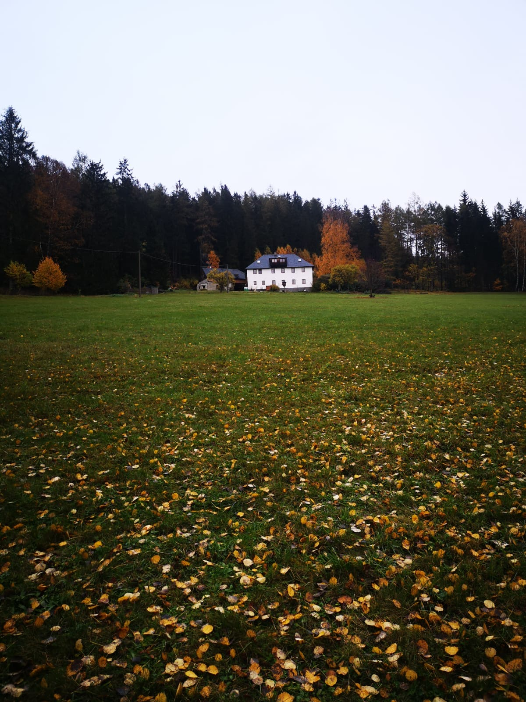
Každý apartmán má vlastní kuchyňku (indukční vařič, mikrovlnka, lednice, konvice i nádobí), sprchový kout a toaletu. Povlečení a ručníky jsou v ceně.
Podkrovní apartmán s výhledem do všech světových stran — nejblíž nebi.
Největší apartmán se dvěma ložnicemi a dvěma koupelnami — ideální pro rodinu.
Přízemní apartmán se dvěma ložnicemi, pohodlný i pro delší pobyty.
Útulný apartmán s výhledem na rybníček a staletou lípu před domem.
Malý apartmán pro dva — tak akorát na romantický únik z města.
Po domluvě snídaně, polopenze nebo snídaňové košíky až k apartmánu.
Bývalá konírna s barem — posezení, deskovky, večery s přáteli.
Venkovní posezení s ohništěm a grilem, prosklená veranda pro chladnější večery.
Zázemí pro lyže i kola — a po houbách i sušička hub.
Po předchozí domluvě — pes 250–450 Kč/noc, pelíšek s sebou.
Koně k hájence patří — a od léta 2027 chystáme i vyjížďky.
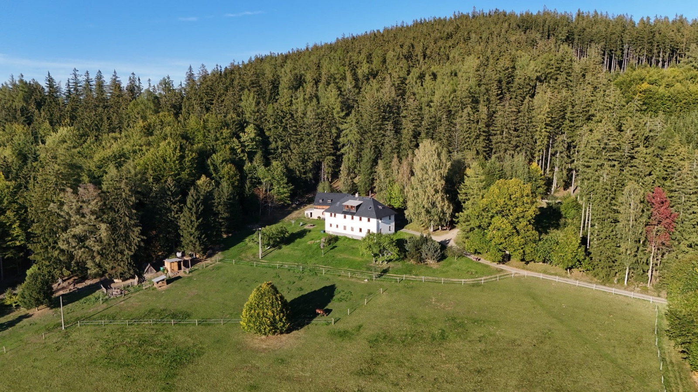
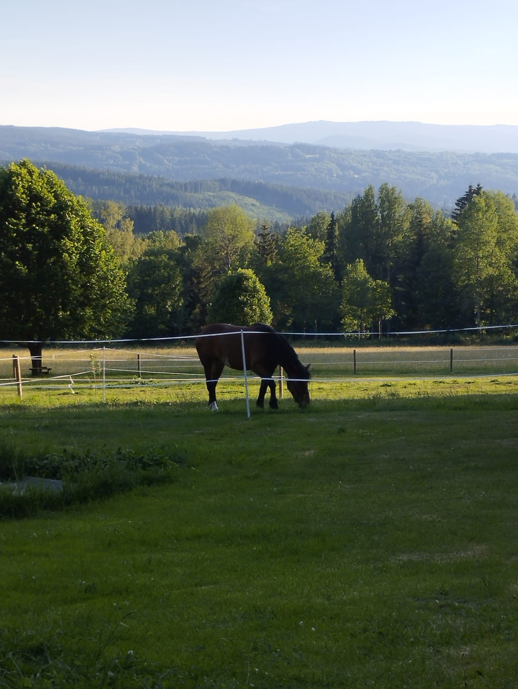
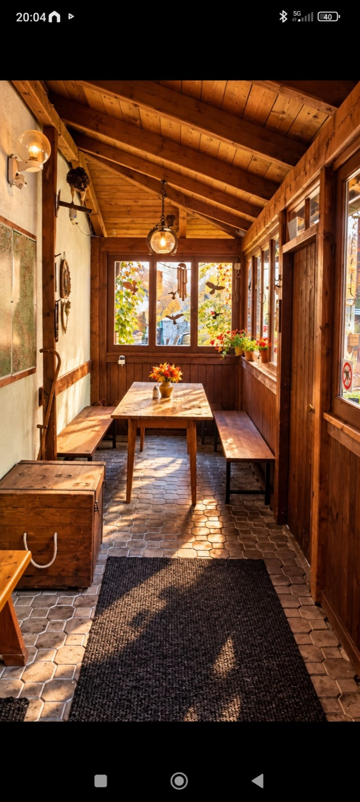
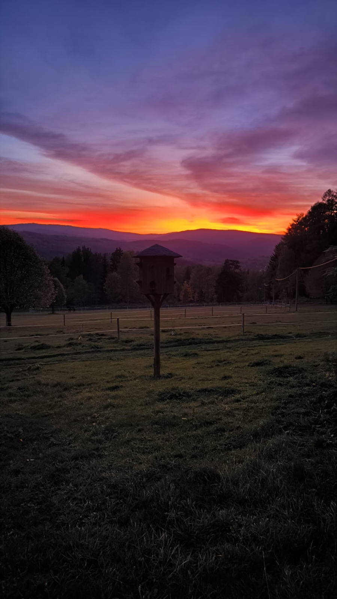
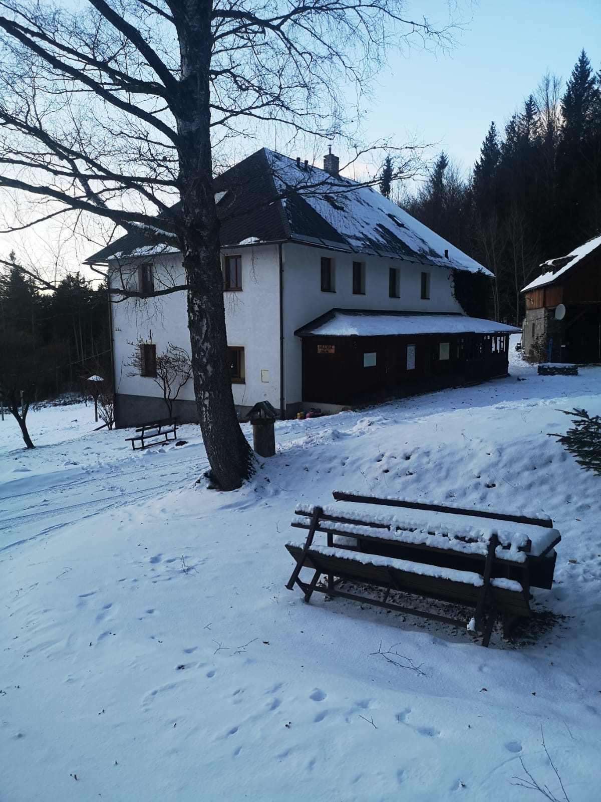
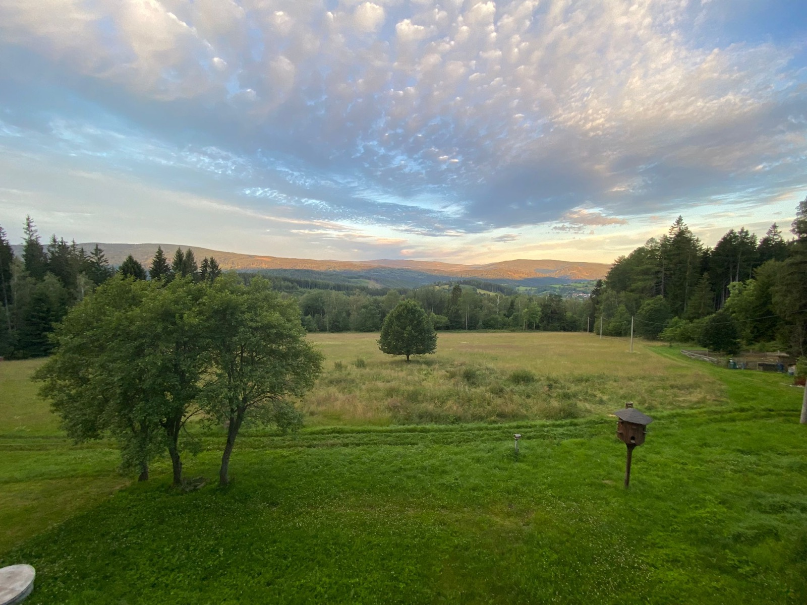
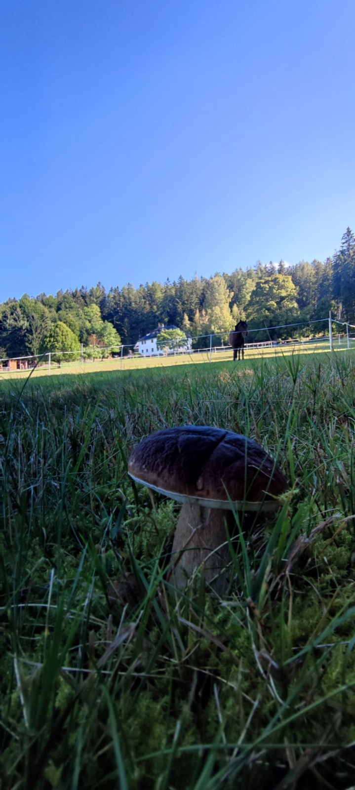
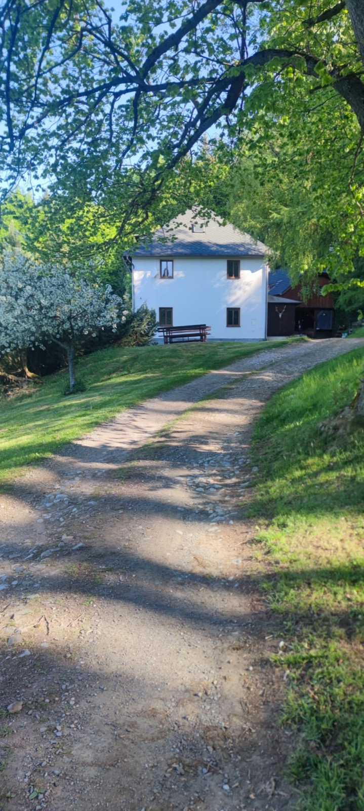
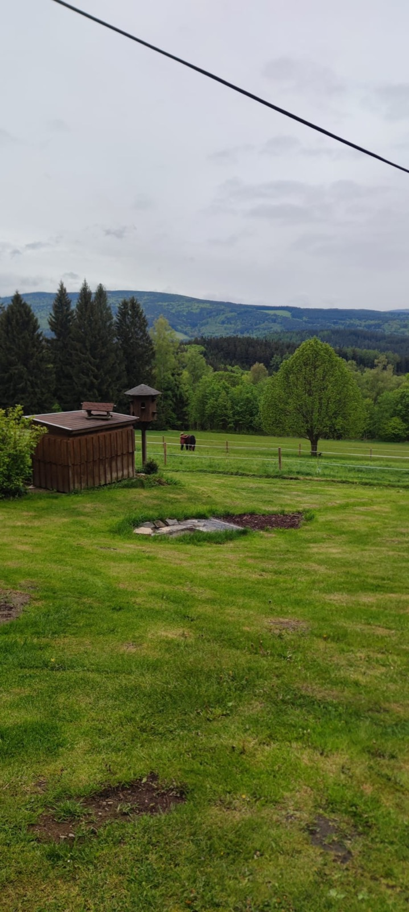
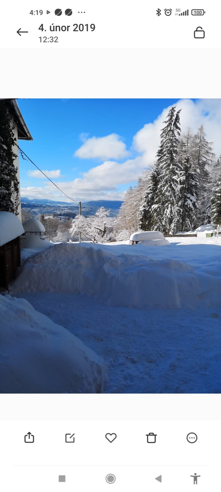
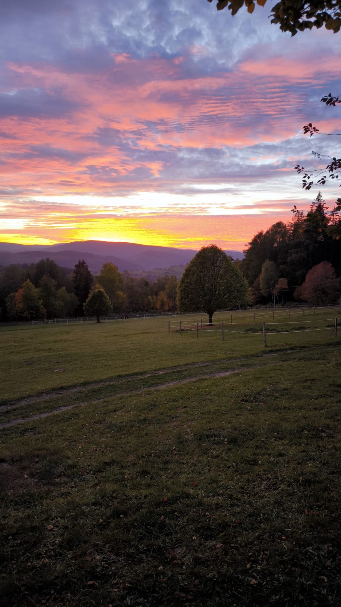
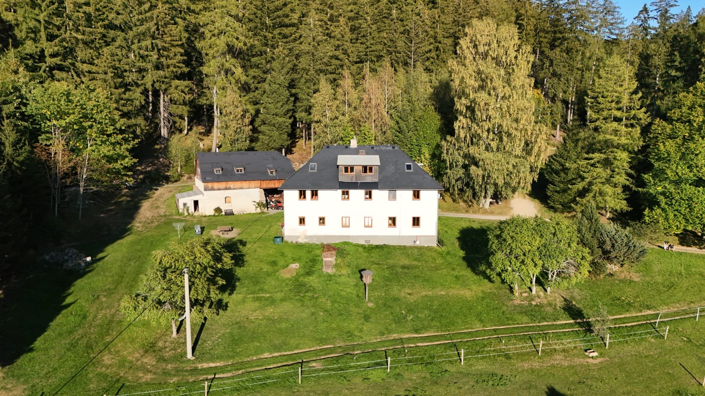
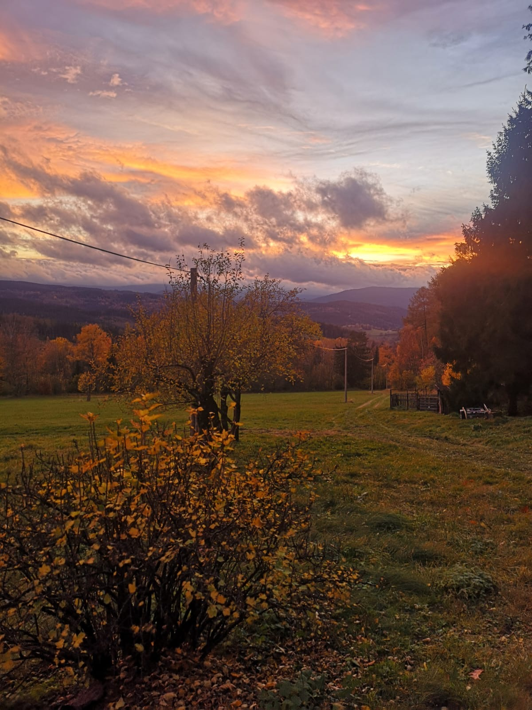
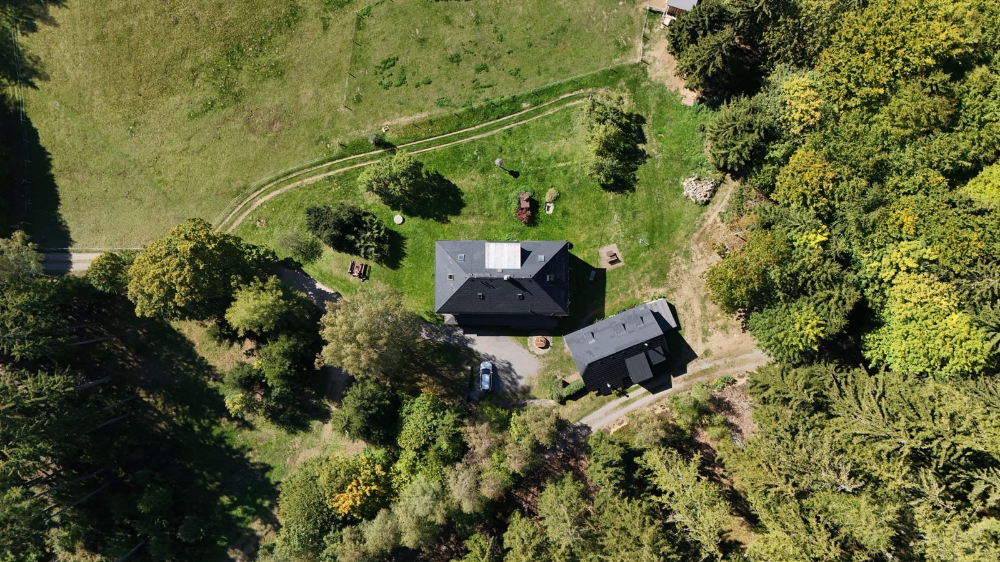
„Klid, pohoda, vstřícnost a ochota."
— z hodnocení našich hostů
Les začíná pár kroků od domu. V létě turistika, kola a houbaření, v zimě běžky rovnou od hájenky a sjezdovky kousek autem.
Kašperské Hory 3 km · Zadov 12 km · Špičák 30 km. Při dobré nadílce běžecké stopy přímo v okolí.
Značené trasy na Huťskou horu, Poledník i Ždanidla, cyklotrasy všemi směry.
Lesy kolem hájenky jsou houbařský ráj — a sušička hub je u nás připravená.
Hrad Kašperk, Kašperské Hory, Sušice, vrcholy a slatě Národního parku Šumava.
Minimální délka pobytu 2 noci · povlečení a ručníky v ceně · WiFi zdarma · parkování přímo u domu · nekuřácký objekt
Rezervace telefonicky nebo e-mailem — ozveme se obratem.